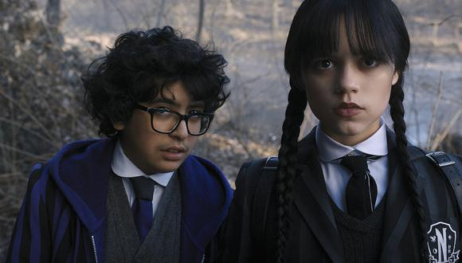

1. Y un sombrío día nació

2. La sombría soledad
3.Amistad, sombrío tesoro
4. Una sombrío noche de baile
Merlina: Reparto, de qué trata, capítulos de la serie Wednesday en Netflix
Tim Burton llegará a Netflix que fuera más allá de las películas por medio de Wednesday: una serie que tendrá como protagonista a Merlina Addams (como su nombre en inglés lo indica).
Vale la pena agregar desde ya un dato cultural. En caso de que no lo sepas, Wednesday Addams es Merlina Addams, solo que tuvo esa actualización para el marcado hispano. La hija de Morticia y Homero Addams se separa de su núcleo familiar para contarnos su propia historia, misma que podremos ver en la plataforma de Netflix. El anuncio de esta nueva serie de tv se dio de manera oficial con un póster en sus redes sociales.
Estreno de Wednesday: ¿Cuándo podrás ver la serie de Netflix?
Para todos aquellos con ansias de ver la producción de Burton, se ha confirmado que la fecha de estreno global de Wednesday será el 23 de noviembre de 2022 en Netflix.
¿De qué trata Merlina?
Wednesday Addams (o Merlina Addams), seguirá explorando sus años de estudiante a través de Nevermore Academy. Se cree que su nueva interpretación no estará muy lejos de las que vimos con Chlöe Grace Moretz (quien prestó su voz en producciones anteriores para darle vida) y Christina Ricci.
Algunas pistas que nos puede dar el póster es que continuará explorando sus poderes sobrenaturales mientras trata de llevar una vida ‘normal’, pero eso no significa que no estemos abiertos a cualquier sorpresa.
¿Quiénes protagonizan Wednesday?
El elenco de la serie sobre Merlina Addams es la reunión de talento joven y algunas leyendas de Hollywood. La serie contará con la participación de Jenna Ortega como Merlina Addams, Catherine Zeta-Jones como Morticia Addams, Luis Guzmán (de origen puertorriqueño) como Homero Addams y Victor Dorobantu como el tío Cosa. También se sabe que se traerá de vuelta a Christina Ricci, quien interpretó a Merlina en las adaptaciones cinematográficas de los 90.
Al ser un proyecto dirigido por el servicio de streaming de Netflix
Próximamente

Luis Raul Osorio Muñoz
Lima, PE
Applied Science Research Assistant and Graphic Designer at AmeriGEO. Master's Degree studies in Higher Education. Bachelor of Architecture and Urban Planning from the Federico Villarreal National University. Technical student of the Geomatics Career in Sencico, with experience in the development of urban and territorial plans, projects of residential, commercial and industrial buildings. Projects for the restoration and conservation of heritage monuments. Drone pilot and audiovisual project creation in general.